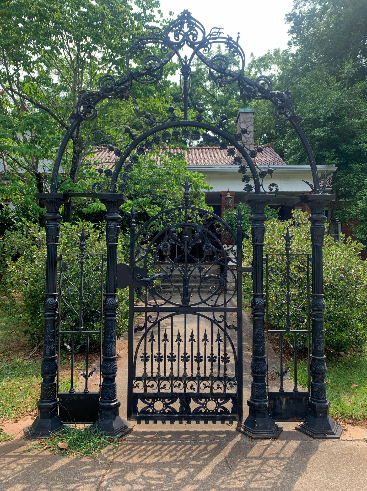

The Marlowe gates
A pair of driveway gates and an overthrow for a Victorian semi in Ecclesall, replacing gates that were taken for the war effort and never put back.

The brief
The house had its railings back — one surviving run at the front, restored years ago — but the drive had stood open for eighty years. The family had a single photograph from 1911: great-grandparents, a cart, and behind them the original gates, small in the frame and blurred at the edges. The ask was not a replica, which the evidence would not support, but gates that belonged to the house and matched the railing that had survived.
At the forge
The design was drawn full-size from two sources: the photograph, which fixed the proportions and the overthrow's arch, and the surviving railing, whose scroll was measured, drawn and repeated as the gates' own pattern, so old and new read as one set of ironwork. The frames are joined with mortise and tenon and the scrolls are forge-welded and collared — no tube, no bought-in panels, nothing that would look wrong in twenty years. Because the gates live outdoors, they were galvanised before painting: the paint is the colour, the zinc is the protection. The drive opening sloped 90 mm across its width, so the gates were made to the slope and hung level-headed, with the bottom rail following the drive.
The outcome
Fitted over two days, including resetting one loose post. The gates shut on a hand-forged latch copied from the garden gate at the back of the same house. The client's mother, who remembered the drive open all her life, gave the testimonial on the home page. The job took eleven weeks from deposit to fitting, most of it in the scrollwork.
Specification
- Client
- Private house, Ecclesall, Sheffield
- Material
- Mild steel throughout
- Technique
- Tenoned frames, forge-welded scrolls, collared joints
- Size
- Pair 3.6 m wide × 1.8 m high; overthrow to 2.9 m
- Finish
- Hot-dip galvanised, then painted black
- Time
- 11 weeks, deposit to fitting
- Status
- Fitted 2026 · In daily use